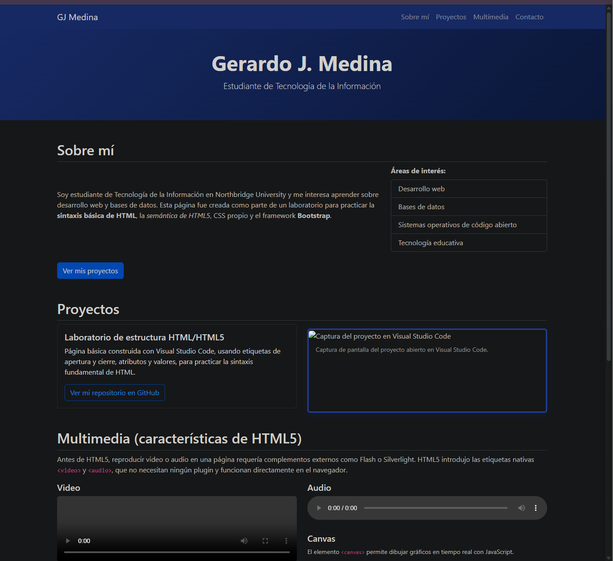

Laboratorio de estructura HTML/HTML5
Página básica construida con Visual Studio Code, usando etiquetas de apertura y cierre, atributos y valores, para practicar la sintaxis fundamental de HTML.
Ver mi repositorio en GitHubEstudiante de Tecnología de la Información
Soy estudiante de Tecnología de la Información en Northbridge University y me interesa aprender sobre desarrollo web y bases de datos. Esta página fue creada como parte de un laboratorio para practicar la sintaxis básica de HTML, la semántica de HTML5, CSS propio y el framework Bootstrap.
Áreas de interés:
Página básica construida con Visual Studio Code, usando etiquetas de apertura y cierre, atributos y valores, para practicar la sintaxis fundamental de HTML.
Ver mi repositorio en GitHub
Antes de HTML5, reproducir video o audio en una página requería
complementos externos como Flash o Silverlight. HTML5 introdujo
las etiquetas nativas <video> y
<audio>, que no necesitan ningún plugin y
funcionan directamente en el navegador.
El elemento <canvas> permite dibujar gráficos
en tiempo real con JavaScript.
También puedes escribirme directamente a gmedina6253@stu.nuc.edu